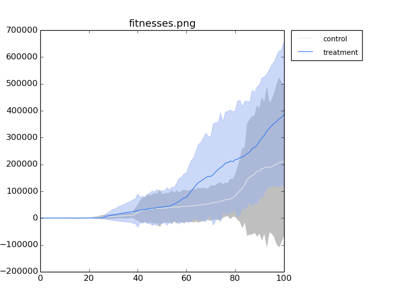
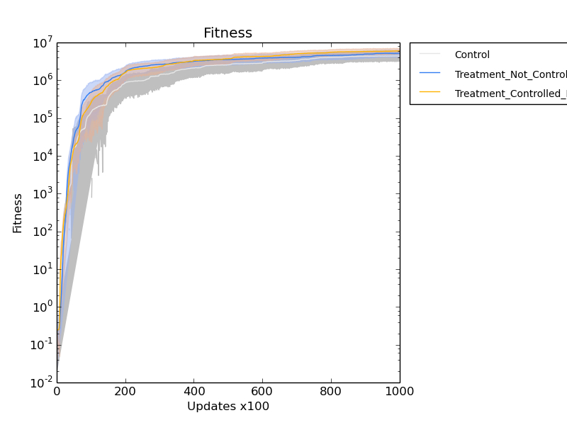
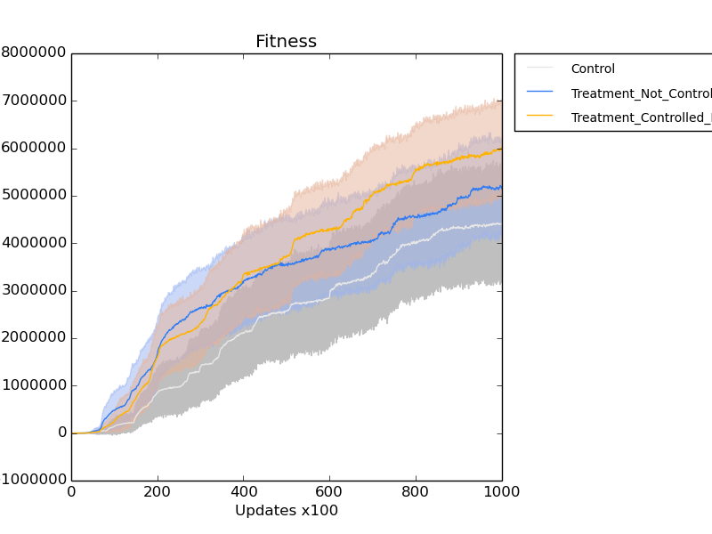

Doing some thinking work on how I’m going to integrate the HGT resevoir code into the LGT code. I made a new git branch: initial_hgt_lgt_combination.
The flow must be as follows:
Initialize the HGT resevoir
Currently, this means activating the ENABLE_HGT config file option.
LGT Mutates, using the HGT reservoir
Currently, this means enabling the LGT options (need to look at it). Mutation rates, etc.
re-generate configuration file from ./avida itself.
figure out how to enable LGT in the config
Enable HGT reservoir in config.
add code to the LGT mutation code to use the reservoir
run some experiments! (rather, do a trace through the code and make sure everything is getting touched appropriately).
Deprecate all non-reservoir HGT code.
Rename all the LGT code to be HGT code.
Rename all the LGT options to HGT options.
Test the shit out of it.
mutagenic instruction Uptake-HGT-Bonus
Increases HGT mutation chance for that organism, while conferring a bonus.
Have a conversation with Charles or Dave about whether we want this mutation to be applied on divide (which is just how it is done now), or if we want it to be more of a cosmic-ray-style mutation, which seems more realistic to me.
The bonus will be set via a config option, as will the mutagenic chance increase.
Look at how Heather did mutagenic instructions… Check on her papers and her code.
mutagenic instruction Uptake-HGT-noBonus
Same as above, but no bonus.
non-mutagenic instruction Uptake-noHGT-Bonus
Same as first, but there’s no uptick in mutation chance.
add capability to seed the reservoirs via the … events file, I think.
There is an inconsistency in the current reasoning behind the existing HGT code. Specifically, there’s never any uptake. The reservoir is undisturbed until a mutation happens. This is ridiculous on its face. The cell doesn’t uptake only when a mutation will happen. :P The key bit, though, is that the reservoir will behave completely differently when I start doing uptake work. Specifically, it will drain at a potentially alarming rate, and be exhausted well before a mutation happens. So, I have to be careful. I’m thinking the reservoir will fill with the genomes (complete genomes) of the organisms that died in each cell (or that we’ll seed into the reservoirs), and then draw fragments from that reservoir when the time comes to do HGT.
Regenerated avida.cfg within the …/Build/Products/Debug directory (Xcode development output).
Enabled LGT by setting DIVIDE_LGT_PROB to 0.05
Enabled HGT reservoir by setting ENABLE_HGT to 1. I’ve left the HGT mutation probability at 0.0 for now.
Editing the LGT code to use the HGT reservoir.
Returned to work around 11. Finished up loosely integrating the HGT reservoir with the LGT code.
This is commit 9e3ca23892 on branch m_hgt_inserted_count. https://github.com/voidptr/avida/commit/9e3ca238922353e38c885fbfa66d004ec0df09cc#diff-f3fb436d5b102e47b8fbbff03a1dbac7R2159
\(cHardwareBase.cc\) - Added code to PopGenomeFragment from HGT reservoir; added simplified stats tracking.
\(cTestCPUInterface.h\) - renamed GetLGTFragment to GetLGTFragmentFromLiving.
\(cOrgInterface.h\) - renamed GetLGTFragment to GetLGTFragmentFromLiving
\(cPopulationInterface.h and .cc\) - renamed GetLGTFragment to GetLGTFragmentFromLiving (this is where the proper implementation is).
\(cPopulation.cc\) - removed requirement that HGT_COMPETENCE_P (probability) be more than zero for the reservoirs to be initialized. It’s a silly requirement anyway, because HGT is enabled.
\(cPopulationCell.h\) - moved InitHGTSupport out of the private area and made it public. This is a kludge, and will probably be put back, since InitHGTSupport is being called from AddGenomeFragments, that is being called now that HGT_COMPETENCE_P is not longer required.
\(cStats.h and .cc\) - added m_hgt_inserted_count, and GenomeFragmentInserted_Simplified(), as well as added an output of m_hgt_inserted_count in PrintHGTData
Pushed last night’s commit to the HPCC, and set up a set of runs that will test the fitness impact of HGT (as opposed to indels and point mutations alone), while keeping the overall mutation rate the same.
Jobs are currently running on the HPCC.
Job: testing_hgt_implementation/100_Initial_Tests/
50 runs: control - All mutation rates at default
Point Per Site: 0.0075;
Insertion Per Organism: 0.05;
Deletion Per Organism: 0.05.
50 runs: treatment - Added LGT rate.
Point Per Site: 0.0075;
Insertion Per Organism: 0.025;
LGT Per Organism: 0.025;
Deletion Per Organism: 0.05;
Now that my initial work is complete, next:
Deprecate all non-reservoir HGT code.
Rename all the LGT code to be HGT code.
Rename all the LGT options to HGT options.
Test the shit out of it.
Ok, my initial test runs are complete. Now, I will run my graphing code to pull out the things. :)
First, remember to load the f’ing module.
caninoko@dev-intel07:~/testing_hgt_implementation/output/100_Initial_Tests/summary$ module load matplotlib
Then, run the analysis
caninoko@dev-intel07:~/testing_hgt_implementation/output/100_Initial_Tests/summary$ python ~/research_scripts/quickplot.py --error fitnesses.png average.dat.gz 4 "../control_/data/" control average.dat.gz 4 "../treatment_/data/" treatment

Well, well, well! I didn’t expect THAT to happen! The HGT runs had slightly higher fitness than the control, though they are totally within each other’s error bars.
Next step is to make sure that those run a bit longer, and also add a control with un-compensated HGT fitness.
Spent some time setting up and running the runs for the Beacon class, since Jay doesn’t have a home directory associated with his account on the hpcc. :/
Jay's HPCC runs crashed. Sigh. Resubmitted with longer walltimes and higher memory limits.
In real news, my own runs completed. Yay! Now to produce graphs!
caninoko@dev-intel07:~/testing_hgt_implementation/output/100_Initial_Tests/summary$ module load matplotlib
caninoko@dev-intel07:~/testing_hgt_implementation/output/101_Longer_Controls/summary$ python ~/research_scripts/quickplot.py --ylog -y "Fitness" -x “Updates x100" --title "Fitness" --error fitnesses average.dat.gz 4 "../*_control_*/data/" "Control" average.dat.gz 4 "../*_lgtcontrol_*/data/" "Treatment_Not_Controlled_MutRate" average.dat.gz 4 "../*_treatment_*/data/" "Treatment_Controlled_MutRate"

Hard to tell what’s going on up there, other than that they all kinda overlap with their error bars. Here’s the same, without the --ylog

So, the order of final fitness is less information results in lowered fitness, while greater information struggles with greater mutation rate, then overcomes it. Meh, so it’s all good. Didn’t take good notes during the meeting, but Dave said yesterday that with obligate HGTers, he’s not surprised that there’s faster evolution.
Dave also suggested doing experiments with translocation (or gene duplication) just to see if there was a different effect between it and HGT. So, to see if HGT only helps you by giving you a round-about mechanism for gene-duplication.
The other uncontrolled mechanism is that we don’t know how diverse the population is. If the population is not very diverse, the effect should be pretty much exactly that of gene duplication. If it’s very diverse, then it *could* be different.
So, next steps
figure out how to measure diversity. This might already be in one of the data files.
Ok, looking at the data files, nothing that I’ve generated so far has that measure. :( And I’m having a hard time finding something that will work.
Trying to figure out how to print out diversity. I’m going to try some options and see what comes out. So far, looking at words like genotype, diversity, entropy.
Events.cfg:
u 0:100:end PrintData detaildata.dat entropy
Results in "\(Data manager unable to find entry ‘entropy'\)"
After giving it a fair bit of thought, I think I have a moderate solution to the diversity question.
I did some preliminary runs generating population data, and also recording diversity information using the u 0:100:end PrintPhenotypeData \(events.cfg\) command.
PrintPhenotypeData outputs the following fields of note:
2: Unique phenotypes (by task done)
How many unique combinations of tasks are actually done.
3: Shannon diversity of Phenotypes (by task done)
This calculates the Shannon diversity measure (a measure of diversity that takes into account composition) for the population based on the number of phenotypes (2) and their level of representation (frequency in the population).
The next thing I did was to dump out population dumps, and then run them through analyze mode, looking at them via the PRINT_DIVERSITY command, which dumps out the following items of note:
One line per task rewarded (0-8). For each line:
2: Number of organisms performing a task
3: Number of genotypes performing a task
Between 2 and 3, I can calculate the Shannon Diversity fraction for a given task \(((TaskOrgFreq) * (log(TaskOrgFreq)) / log(2))\)
I can then add all of them together to get the total Shannon diversity.
I need to make sure I’m taking the frequency of the right thing.
If I take the frequency of genotypes, then I’m measuring the diversity of genotypes inside a task.
If I take the frequency of organisms doing a task, then I’m measuring the diversity of task execution within the whole population
4: Average distance between genotypes performing this task.
Not sure how this is calculated, unless there’s an n^2 process
5: Total per-site entropy between genotypes performing task.
This one is interesting because it’s a measure of the diversity of the genotypes that do this task.
Now, what I’d like to do is add some items from PRINT_DIVERSITY to PrintPhenotypeData. Specifically, I want to add total per-site entropy within phenotypes, averaged, or possibly weighted-averaged, by the frequency of each phenotype. What I hope this gives me is an idea of the genetic diversity within a given phenotype. This might be a nice measure of lateral transfer.
So, there are 256 possible phenotypes, when you have 8 possible tasks, of which any task may be on or off. How do you combine 256 possible things?
So, maybe you use shannon information again. You calculate the frequency of a phenotype. You also calculate the diversity of the genomes within that phenotype. One straightfoward way to visualize this is with a bar-chart (for the phenotypic frequency), and then a heat-map for how genetically diverse each phenotype is...
Maybe I don’t want to measure it this way, though. What I want is an overall measure that tells me how disparate the organisms are that happen to share phenotypes… But maybe I don’t care about total phenotypes at all? Maybe just the partial-phenotypes of single task is enough to give me a feel for what I want, like within PRINT_DIVERSITY.
Chatted with Charles, Josh, Aaron, and Anya about my thoughts for genetic diversity within populations.
I wrote Charles the following email:
Subject: Total Population Diversity, based on Genotypic Diversity within a Phenotype
Is there a measure for this? I can easily generate Shannon diversity measures for genotypes within phenotypes (unique combinations of tasks) [genotypic_diversity], but what would you suggest for combining these measures across a whole population?
My first thought was to take the individual components of information for each phenotype:
\(phenotypeA_entropy = phenotypeA_frequency * log(phenotypeA_frequency) / log(2)\),
and then use them as a factor to normalize the genotypic entropy values within a phenotype:
\(total_phenotypic_genotypic_diversity = sum( phenotype_entropy_i * genotypic_diversity_i )\)
But, I'd really rather not make up my own measure if there's something in the literature that captures what I want. Thoughts?
Charles came right by my office, and we discussed it. :D
His thought was to try my approach, and then try weighting as I suggested, or also by population size, and also try not combining, but printing a distribution. Charles seemed pretty excited about these types of analyses. :D
Separately, I chatted with Josh about the issue, and he didn’t have any advice off the top of his head, but he suggested I look at what the literature says about population structure. So, googling that, I found a paper that seems to address the issues I’m interested in:
Nei, Masatoshi. "Analysis of gene diversity in subdivided populations." Proceedings of the National Academy of Sciences 70.12 (1973): 3321-3323.
This paper bases its genetic diversity on Fixation indices or F-statistics. (http://en.wikipedia.org/wiki/Fixation_index)
The important takeaway is that they use weighting to group their diversity information. They define weighting to be 1/s, where s is the number of subpopulations. Which is… questionable, but not surprising since they aren’t using information. I’d rather use the diversity measure as my weight factor, or at least the proportion of the population that the subpopulation entails.
I’ve been reading about Levenshtein distances (edit distances), and how the hell I would go about calculating those for populations of genomes (which I would need to do, if I didn’t have fixed-length genomes).
Levenshtein is, naively, with dynamic programming, an O(n*m) algorithm. Extrapolate to compare every string to every other string, gives us O((n*m)^2). So, ~n^3. Which is a big old FUCK NO.
But! Edit distance should be locally transitive! If GenotypeA has an edit distance to GenotypeB of 2 (d_AB), and I calculate that GenotypeB has an edit distance to GenotypeC of 2 (d_BC), then the distance (d_AC) between GenotypeA and GenotypeC is bounded between (d_AB - dBC) and d_AB + dBC), because there is an edit path from A->C, via A->B, then A->C). The bounding is because the path from A->C via B could be via reversions, making them theoretically identical. BUT, this case can be excluded trivially by doing a simple equals comparison of A and C.
SO, this implies that I don’t actually need to measure the distance of every genome to every other genome, but some subset therein. I can just do the above to create clusters of genomes that are within edit bounds of each other.
AND, I can use the algorithm from section 4.1:
Andoni, Alexandr, and Krzysztof Onak. "Approximating edit distance in near-linear time." SIAM Journal on Computing 41.6 (2012): 1635-1648.
To distinguish between strings with large edit distance and small edit distance. This algorithm is sub-linear, so if distances are large, I can move on until I find a small edit distance in a categorized cluster.
So, a basic algorithm.
G1 -> do sub-linear approximation to roughly categorize distance from G1 to all G
Whipped up a python proof of concept script to do levenshtein distance in various ways. Will implement the approximate levenshtein, as well as the sub-linear time approximation mechanism.